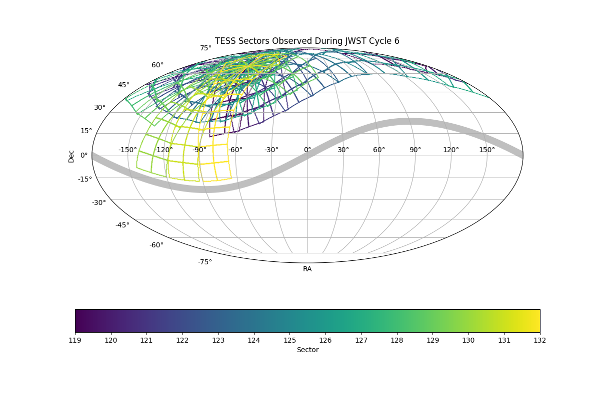

Joint JWST-TESS observing proposals can be submitted in response to the JWST Cycle 6 Call for Proposals. Through the joint JWST-TESS program, you can request 20-second or 2-minute cadence TESS observations for specific targets. For more information, see here.
JWST Cycle 6 overlaps with TESS sectors 119 to 132, shown on the sky map below. To help prepare your proposal, the TESS Cycle 10 pointings are available now.
The proposal deadline is September 30, 2026 by 8:00 pm US Eastern Time.
